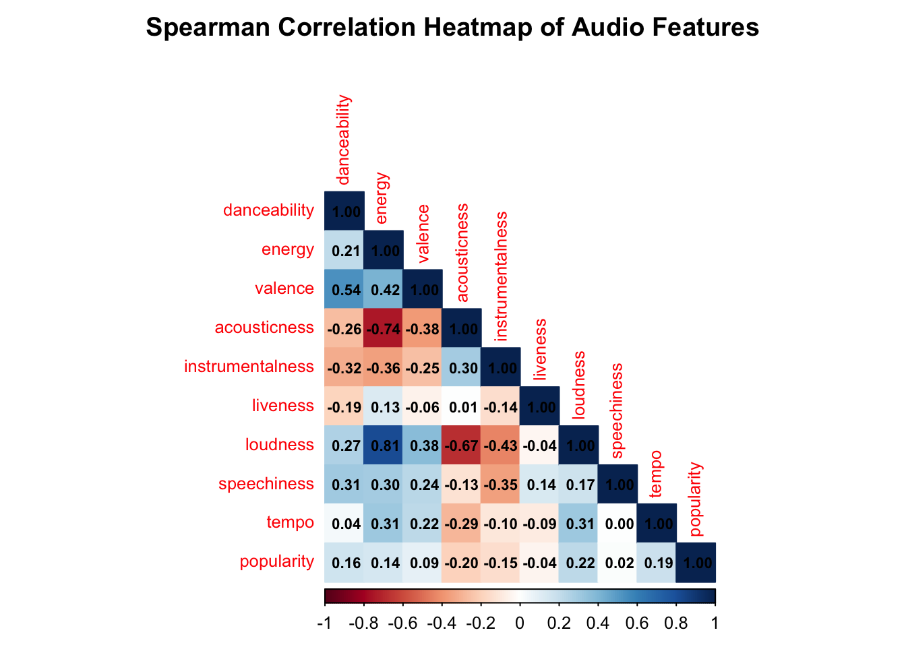
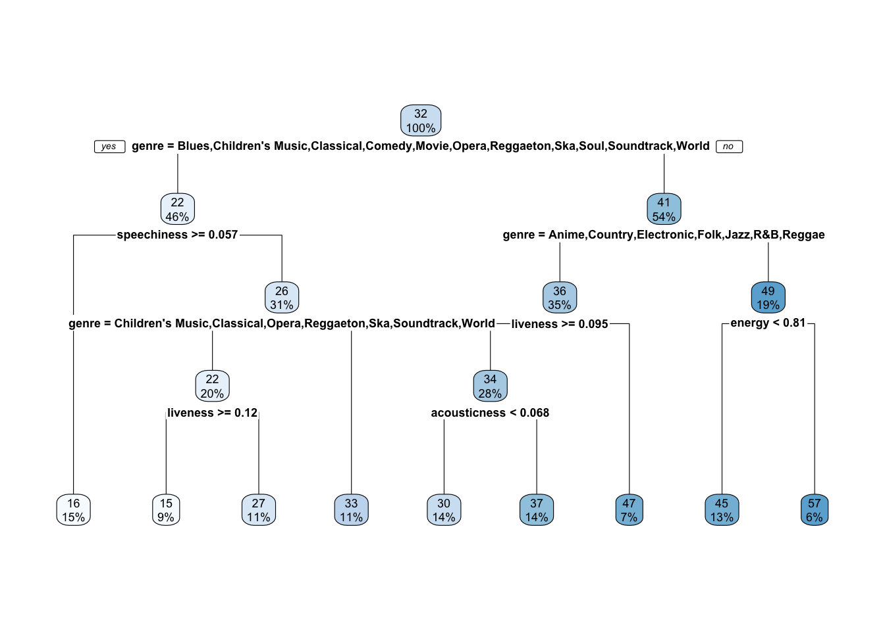
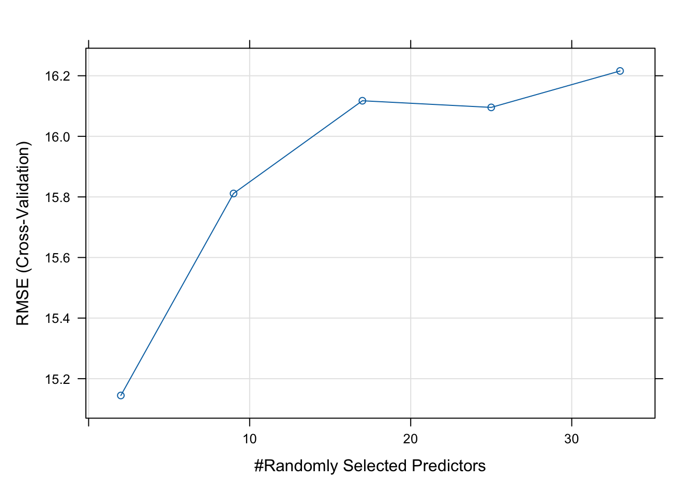
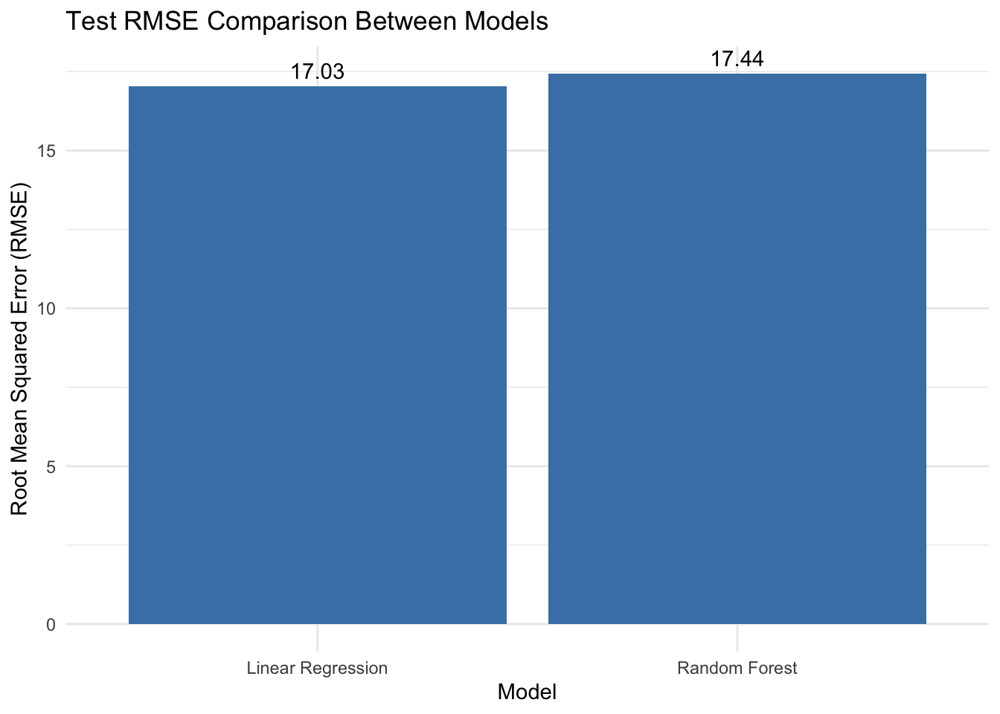

In today’s music industry, achieving popularity on platforms like Spotify can make or break an artist’s career. But what makes a song go viral? Is it the energy of the track, the positivity of the sound, or the tempo that keeps listeners hooked?
This project explores the relationship between the audio characteristics of songs and their popularity on Spotify. Using a combination of an open-source Kaggle dataset and real-time Spotify API data, the aim is to answer a central research question: What audio features are most predictive of a song’s popularity?
Understanding these relationships can provide valuable insights for artists, producers, and marketers aiming to optimize music for broader audience reach. It also sheds light on broader patterns in listener behavior — what kinds of sounds dominate global music trends, and why.
By analyzing features such as danceability, energy, valence, tempo, and others, this project seeks to uncover which aspects of a track’s audio profile are most strongly associated with listener appeal and commercial success.
Two datasets were combined:
Kaggle Dataset: An open-source dataset containing track metadata and audio features (e.g., danceability, energy, valence, tempo, loudness, etc.).
Spotify API: Used to fetch up-to-date popularity scores for a random sample of tracks.
The Kaggle dataset provided static metadata and feature measurements, while the API allowed access to current popularity scores for analysis.
The data were cleaned and prepared as follows:
Filtering: Tracks with a popularity
score of 0 were removed (32% of the sample). These tracks likely
represent newly released or highly obscure songs with no measurable play
count and could bias the analysis if retained.
Feature Engineering: Track duration was converted from milliseconds to minutes. Genre was converted to factor type to help with modeling.
Cleaning: Duplicate tracks were removed, and tracks longer than 15 minutes (likely podcasts) were excluded to focus the analysis on typical music tracks.
The final dataset consisted of tracks with nonzero popularity scores and typical audio feature measurements.
Key audio features analyzed:
Genre: Genre of the song (Hip-hop, electronic, jazz etc).
Danceability: How suitable a track is for dancing (0–1 scale).
Energy: Intensity and activity level of a track.
Valence: Positivity conveyed by a track (0 = sad, 1 = happy).
Tempo: Speed or pace of a track (beats per minute).
Loudness: Average decibel level across the track.
Speechiness: Presence of spoken words in a track.
Acousticness: Likelihood that the track is acoustic.
Instrumentalness: Likelihood that a track has no vocals.
Liveness: Likelihood that the track was recorded live.
The artist’s name and duration of the song have been excluded from the variables of interest, because the column ‘artist_name’ has too many different values to gain any valuable insights (high cardinality might lead to overfitting) and the duration of a song might not be very relevant in assessing it’s popularity.
Since some audio features may not be normally distributed and the relationships could be monotonic but nonlinear, a Spearman correlation heatmap was constructed to better explore the strength and direction of associations between variables.

The heatmap highlights notable relationships among features. For example, danceability and valence show a moderate positive correlation, while acousticness and loudness exhibit a negative association. Popularity is modestly correlated with features like speechiness and tempo, but overall correlations remain relatively weak, reinforcing the complexity of predicting track success based solely on audio characteristics.
The dataset was first split into a training set and a test set for fitting and evaluating the linear regression model. No separate validation set was needed as linear regression does not involve hyperparameter tuning. The dataset was split into:
70% training data
30% test data.
For tree-based models, a three-way split was used: training set for fitting, validation set for tuning, and test set for final evaluation. This ensures that the final evaluation is unbiased by the tuning process. The data was split into:
60% training data
20% validation data
20% test data.
A multiple linear regression model was fitted using the training set and evaluated on the test set to assess its predictive performance.
Linear regression was chosen as a baseline model due to its interpretability and simplicity. It tests for linear associations between audio features (predictors) and track popularity (response).
The true relationship between audio features and popularity may not be linear. If interactions or nonlinear effects exist, linear regression will miss them, leading to underfitting.
## Test RMSE (Linear Regression): 17.03| term | estimate | std.error | statistic | p.value |
|---|---|---|---|---|
| (Intercept) | 45.742 | 15.731 | 2.91 | 0.0044 |
| danceability | -3.794 | 12.040 | -0.32 | 0.7533 |
| energy | -4.475 | 12.287 | -0.36 | 0.7164 |
| valence | 2.267 | 6.794 | 0.33 | 0.7392 |
| acousticness | -6.948 | 6.826 | -1.02 | 0.3110 |
| instrumentalness | 0.694 | 5.065 | 0.14 | 0.8912 |
| liveness | -2.930 | 7.605 | -0.39 | 0.7008 |
| loudness | -0.053 | 0.443 | -0.12 | 0.9055 |
| speechiness | -22.135 | 12.629 | -1.75 | 0.0824 |
| tempo | 0.069 | 0.045 | 1.53 | 0.1282 |
| genre_Anime | -14.029 | 7.515 | -1.87 | 0.0646 |
| genre_Blues | -14.234 | 8.284 | -1.72 | 0.0886 |
genre_Children's Music
|
-31.606 | 10.287 | -3.07 | 0.0027 |
genre_Children’s Music
|
NA | NA | NA | NA |
| genre_Classical | -21.146 | 8.617 | -2.45 | 0.0157 |
| genre_Comedy | -3.804 | 13.803 | -0.28 | 0.7834 |
| genre_Country | -9.635 | 7.134 | -1.35 | 0.1796 |
| genre_Dance | 3.602 | 8.076 | 0.45 | 0.6564 |
| genre_Electronic | -11.640 | 7.859 | -1.48 | 0.1414 |
| genre_Folk | -4.176 | 7.992 | -0.52 | 0.6024 |
genre_Hip-Hop
|
9.091 | 7.636 | 1.19 | 0.2364 |
| genre_Jazz | -9.699 | 8.712 | -1.11 | 0.2680 |
| genre_Movie | -19.315 | 8.098 | -2.39 | 0.0188 |
| genre_Opera | -30.221 | 10.536 | -2.87 | 0.0049 |
| genre_Pop | NA | NA | NA | NA |
genre_R&B
|
-15.739 | 8.670 | -1.82 | 0.0722 |
| genre_Rap | 7.091 | 15.637 | 0.45 | 0.6511 |
| genre_Reggae | -6.157 | 8.576 | -0.72 | 0.4744 |
| genre_Reggaeton | -24.436 | 7.530 | -3.24 | 0.0016 |
| genre_Rock | 0.592 | 14.989 | 0.04 | 0.9686 |
| genre_Ska | -25.750 | 8.217 | -3.13 | 0.0022 |
| genre_Soul | -16.112 | 8.249 | -1.95 | 0.0533 |
| genre_Soundtrack | -20.960 | 10.405 | -2.01 | 0.0464 |
| genre_World | -24.768 | 8.266 | -3.00 | 0.0034 |
The linear regression model estimated the relationship between audio features and Spotify track popularity. While several predictors had weak or statistically insignificant effects, a few variables stood out:
Speechiness had a large negative effect on popularity (estimate = –21.9, p = 0.085), suggesting that tracks with more spoken-word content tend to be less popular, though the result was only marginally significant.
Tempo had a positive coefficient (estimate = 0.069, p = 0.125), suggesting a weak upward trend: faster songs may be slightly more popular, but the effect is not strong enough to confirm statistically.
Among the genre dummy variables, several showed strong
and statistically significant negative effects, relative to the
baseline genre (the first alphabetically omitted genre
during dummy encoding — likely "Alternative"):
genre_Children's Music (estimate = –31.94, p =
0.002)genre_Classical (estimate = –21.12, p =
0.016)genre_Opera (estimate = –30.19, p =
0.005)genre_Reggaeton (estimate = –24.41, p =
0.002)genre_Ska (estimate = –25.76, p = 0.002)genre_Soundtrack (estimate = –20.98, p =
0.046)genre_World (estimate = –24.73, p =
0.003)These results suggest that tracks in these genres tend to have substantially lower popularity compared to the baseline genre.
A few other genre effects, such as genre_Hip-Hop
(estimate = +9.07, p = 0.237), showed a positive
relationship, though they were not statistically
significant.
Overall, the model highlights that genre is a strong driver
of popularity, with several genres consistently associated with
lower popularity scores. Most audio features such as
danceability, energy, and valence
showed weak or inconsistent relationships, suggesting
that non-audio factors like genre may play a bigger
role in determining track popularity.
A regression tree model was fitted to capture potential nonlinearities and interaction effects among the predictors.
Regression trees can automatically detect and model nonlinear interactions without requiring explicit specification. They are highly interpretable, showing clear decision rules.
Regression trees are prone to overfitting and can be sensitive to small changes in the data. Pruning or ensemble methods are needed to stabilize performance.

The regression tree model reveals how combinations of genre and specific audio features help explain variation in track popularity. The tree splits the data into distinct segments based on conditions that best reduce the prediction error at each step.
Genre is the dominant predictor in the first split. Tracks belonging to genres such as Children’s Music, Classical, Opera, Reggaeton, Ska, Soundtrack, and World are grouped together and associated with lower average popularity compared to genres like Electronic, Jazz, R&B, and Country. This reinforces the findings from the linear regression model.
Within the low-popularity genres group:
speechiness ≥ 0.057) are further
divided by genre again.For the remaining genres:
This tree structure provides an interpretable, rule-based understanding of track popularity. It reinforces that genre alone is a strong discriminator, and that certain features like speechiness, liveness, and energy further stratify popularity within genre-based groups.
While more flexible models like random forests outperform the tree in RMSE, the regression tree offers valuable insight into how and why different subgroups of music tracks differ in popularity.
A Random Forest model was trained and tuned to improve predictive
performance. The best number of randomly selected predictors
(mtry) was selected using 5-fold cross-validation.
Random Forests aggregate the predictions of many trees, reducing overfitting and capturing complex nonlinear interactions. They tend to perform better than individual trees on unseen data.
Random Forests sacrifice some interpretability compared to single trees. Additionally, since popularity is influenced by many external factors (e.g., marketing, social media), audio features alone can still only explain part of the variability.
To train the Random Forest model, we used the caret package, which streamlines model training and hyperparameter tuning. The train() function performs 5-fold cross-validation, where the dataset is split into five parts. Each part is used once as a validation set while the remaining four parts are used for training, rotating through all combinations. The mtry parameter — the number of variables randomly sampled at each tree split — was automatically tuned using tuneLength = 5, meaning 5 candidate values were tested.
The model was evaluated using Root Mean Squared Error (RMSE) across folds, and the best value of mtry was selected based on the lowest average RMSE. This helps balance bias and variance, improving generalization to unseen data.
| mtry |
|---|
| 2 |
| mtry | RMSE | Rsquared | MAE | RMSESD | RsquaredSD | MAESD |
|---|---|---|---|---|---|---|
| 2 | 15.14452 | 0.1460597 | 12.34444 | 1.534650 | 0.0335473 | 1.1481035 |
| 9 | 15.81133 | 0.0731567 | 12.76553 | 1.311952 | 0.0321560 | 1.0116775 |
| 17 | 16.11745 | 0.0576891 | 13.08369 | 1.241967 | 0.0353809 | 1.0444009 |
| 25 | 16.09551 | 0.0601657 | 13.07003 | 1.153932 | 0.0325148 | 0.9643427 |
| 33 | 16.21582 | 0.0547585 | 13.02023 | 1.264410 | 0.0304160 | 0.9433757 |

The best tuned Random Forest model was evaluated on the held-out test set.
## Test RMSE (Random Forest): 17.44The test RMSEs for Linear Regression and Random Forest were compared to assess overall predictive performance.

To improve prediction accuracy and capture complex, nonlinear relationships between audio features and track popularity, a Random Forest model was trained with hyperparameter tuning using cross-validation.
The tuning plot above shows how the test RMSE varied as the number of
randomly selected predictors (mtry) changed. The lowest
RMSE occurred when using only a small number of predictors, suggesting
that selecting a focused subset of variables helped reduce overfitting
and noise.
The Random Forest model offered a flexible, ensemble-based approach to predicting Spotify track popularity. Although it did not outperform linear regression in this dataset, it validated that interactions and nonlinear effects exist, especially when accounting for categorical genres alongside audio characteristics.
This project explored the question: What audio features are most predictive of a song’s popularity on Spotify? By combining an open-source Kaggle dataset of Spotify tracks with real-time popularity data retrieved via the Spotify Web API, a diverse set of song-level features — including acoustic attributes and genre — were analyzed using multiple modeling approaches.
A multiple linear regression model identified speechiness as a significant negative predictor of popularity and highlighted genre as a strong determinant. Several genres — including Children’s Music, Classical, Opera, and Reggaeton — were significantly associated with lower popularity scores. Surprisingly, this linear model achieved the lowest test RMSE of 17.04, outperforming more complex models.
A regression tree provided interpretable insights into how genre, speechiness, energy, and liveness interact to segment songs into low and high popularity groups. This supported earlier regression findings and emphasized that tracks with lower speech content and high energy generally perform better.
A random forest model, tuned using cross-validation, achieved a slightly higher test RMSE of 17.37. While it did not outperform linear regression, it confirmed the importance of genre and energy, and demonstrated that nonlinear methods can provide robustness and additional feature interaction insights.
Across all models, genre emerged as the most influential factor shaping track popularity, often more so than audio features like danceability or valence. While some attributes such as tempo and speechiness showed consistent effects, their impact was secondary to genre.
This suggests that musical success on Spotify is driven not just by sound properties, but by broader contextual factors — including genre conventions, listener expectations, and possibly external dynamics like artist reputation or playlist inclusion — which were outside the scope of this analysis.
This analysis provides a strong foundation for understanding the complex drivers of music popularity and offers valuable direction for artists, producers, and data scientists alike.